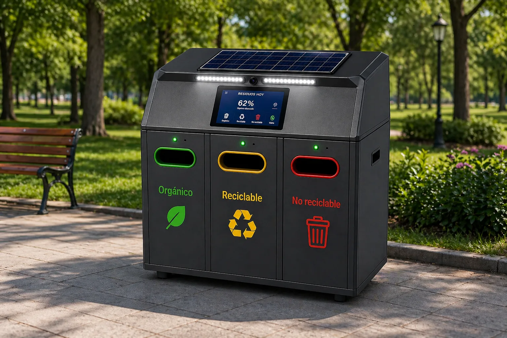

Inteligencia y prototipo
Modelo MobileNetV2, dataset CDMX, métricas, arquitectura, materiales, energía solar, metodología y diagramas del sistema.
Explorar Fase 1
Contenedor inteligente para espacios urbanos y escolares
Clasificación visual, prototipo físico y experiencia móvil conectada para orientar cada depósito y conservar su trazabilidad.
Ruta del proyecto
El proyecto reúne la inteligencia y el prototipo físico con la experiencia móvil, los servicios y la trazabilidad de cada depósito.
Modelo MobileNetV2, dataset CDMX, métricas, arquitectura, materiales, energía solar, metodología y diagramas del sistema.
Explorar Fase 1Aplicación móvil, QR, NestJS, FastAPI, PostgreSQL, resultados, EcoPuntos y evidencia del recorrido funcional.
Explorar Fase 2Evidencia resumida
Las métricas corresponden a cortes documentales distintos y la reducción del 80% es una hipótesis para piloto, no un resultado de campo. Consultar muestra, método y limitaciones.
Problema
En escuelas, parques y edificios públicos, muchos residuos terminan en el contenedor incorrecto por falta de señalización, prisa o dudas sobre el material. EcoHuella convierte ese momento en una interacción simple: detectar, clasificar, abrir la compuerta correcta y registrar el uso.
Diseñar un prototipo accesible, autónomo y escalable que mejore la calidad del reciclaje desde el origen, usando IA ligera y componentes resistentes para operación continua.
Flujo de operación
La cámara RGB toma imagen cuando hay movimiento frente al contenedor.
El modelo MobileNetV2 CDMX clasifica el residuo localmente en Jetson Nano.
La pantalla TFT muestra el logo o ícono grande de la categoría detectada.
El HC-SR04 confirma proximidad y el actuador abre el compartimento correcto.
Cerebro del prototipo
El diseño queda definido sobre Jetson Nano para ejecutar inferencia en el borde, controlar periféricos por GPIO/I2C y mantener la operación sin depender de internet durante cada clasificación.

Clasificación alineada al uso cotidiano
Restos de comida, cáscaras, hojas y residuos biodegradables.
Plástico, cartón, papel, vidrio y metales con potencial de recuperación.
Material contaminado, empaques mixtos o residuos sin ruta de reciclaje viable.